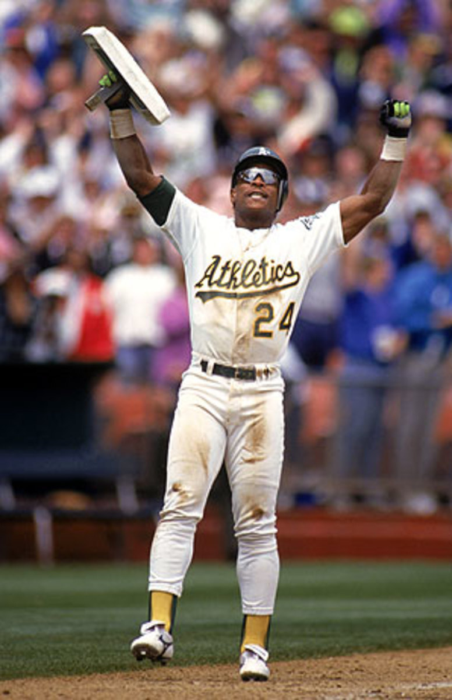
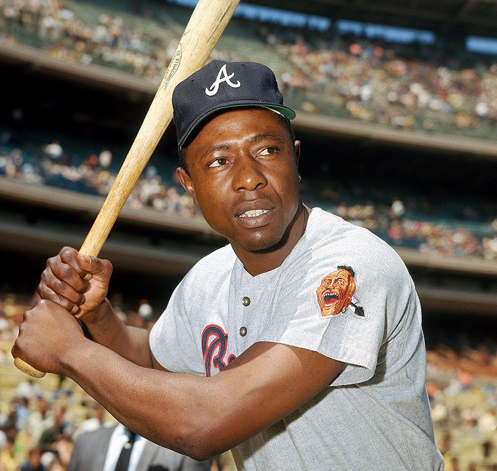
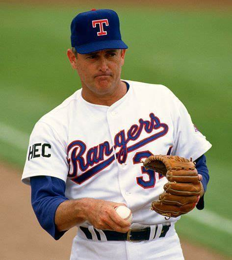
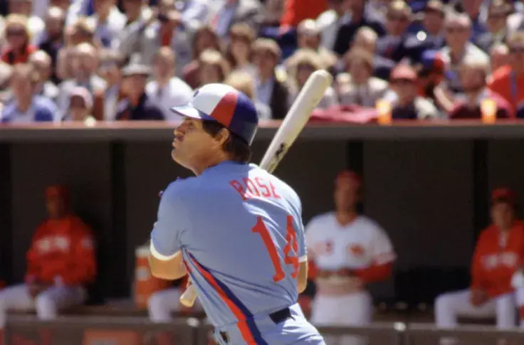
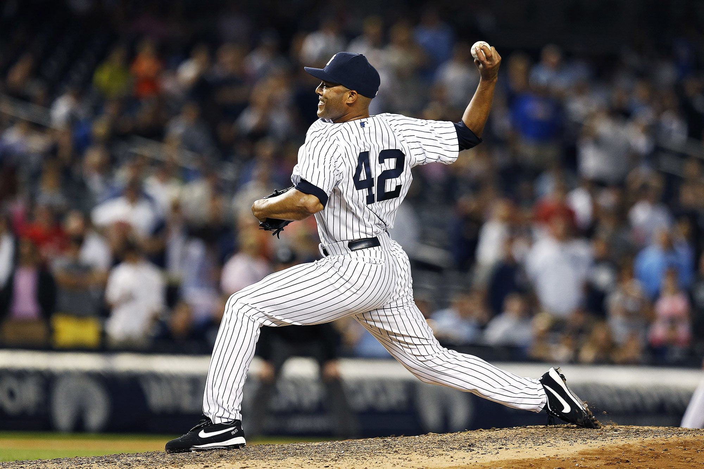
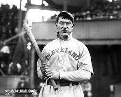

the record with most homeruns in baseball is
barry bonds with 755 homeruns Barry Bonds holds the single-season home run record, with 73 in 2001, and is currently first on the all-time MLB career home runs list with 762. He is generally thought of as being one of the greatest hitters of all-time.

the record with the most stollen bases is ricky henderson with 1406 stollen basses he is one of the of all timeStolen bases were more common in baseball's dead-ball era, when teams relied more on stolen bases and hit and run plays than on home runs. Rickey Henderson holds the MLB career stolen base record with 1,406.

the player with the most rbi in MLB history is Hank arron with 22977 rbi.The all-time career RBI record holder is Hank Aaron with 2,297, 84 more than Ruth in second place. Aaron led the National League in RBI four times, never consecutively. The 1930 season when Wilson set the record saw four players hit more than 160 RBI: Wilson, Gehrig, Chuck Klein, and Al Simmons.

The pitcher with the all-time record for the most in a career goes to Nolan Ryan. Nolan Ryan had a long 27-year career from 1966 to 1993. During this time, Nolan Ryan threw an amazing 5,714 strikeouts.

He holds the major league records for games (3,562), at bats (14,053), hits (4,256), and singles (3,215). He also has the most RBI of any player without a season of 100 or more (1,314, with a career-high of 82 in 1969).
The all-time leaders in grand slams is Alex Rodriguez with 25 in his career, spent entirely in the American League, two more than Lou Gehrig, who also only played in the junior circuit. Willie McCovey is the National League leader with 18.
Barry Bonds holds the record for most career walks drawn with 2,558. Rickey Henderson (2,190), Babe Ruth (2,062), and Ted Williams (2,021) are the only other players to draw more than 2,000 walks in their careers. The active leader in walks is Albert Pujols with 1,345.

In 19 seasons, Rivera posted a record 652 saves with a win-loss mark of 82-60. His career ERA of 2.21 ranks No. 1 among all pitchers who started their careers in the Live Ball Era (post 1919), and his 952 games finished also rank first all time. Rivera was elected to the Hall of Fame in 2019.

Lajoie ended his career with a lifetime . 338 batting average. His career total of 3,252 hits was the second-most in MLB history at the time of his retirement, behind only Honus Wagner's total (3,420). Lajoie's 2,522 hits in the American League was that league's record until Cobb surpassed his mark.